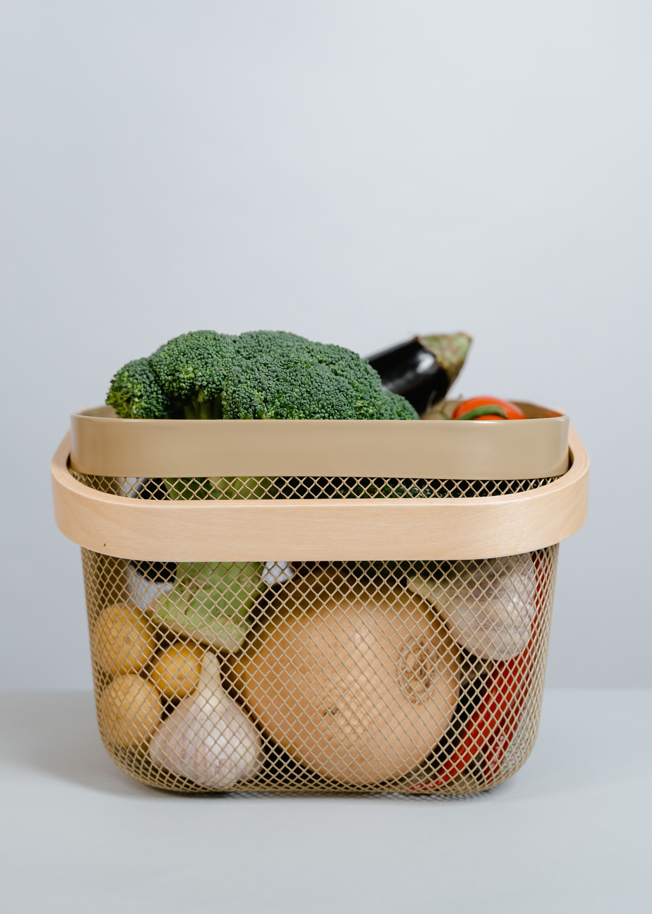

Beneficios de consumir productos locales
La frescura y el apoyo a los agricultores locales forman parte de una propuesta que busca reducir la distancia entre productor y consumidor.
Leer másConoce las ideas que acompañan a HuertoHogar: productos frescos, cercanía con los agricultores locales y una alimentación saludable y sostenible.
La frescura y el apoyo a los agricultores locales forman parte de una propuesta que busca reducir la distancia entre productor y consumidor.
Leer más
Frutas, verduras y productos naturales acompañan una alimentación equilibrada y el interés por las prácticas agrícolas sostenibles.
Leer más